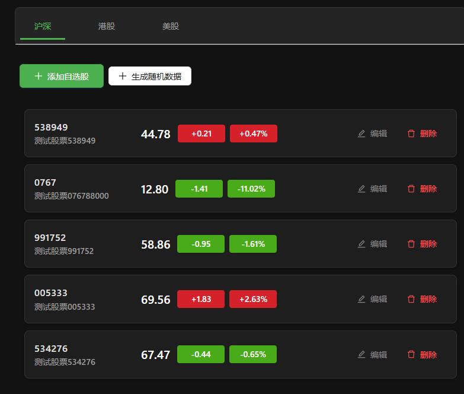
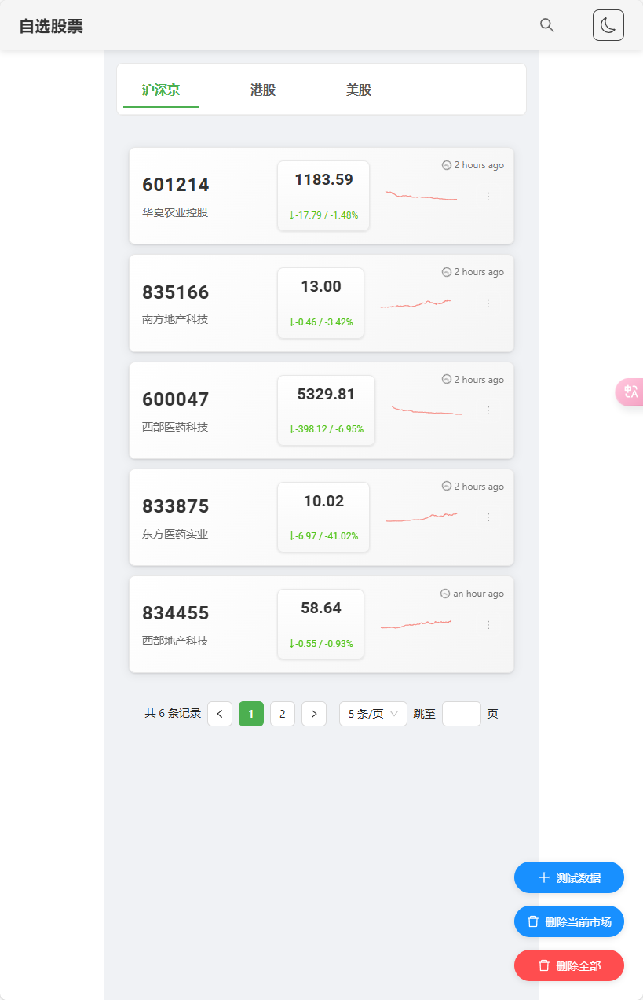
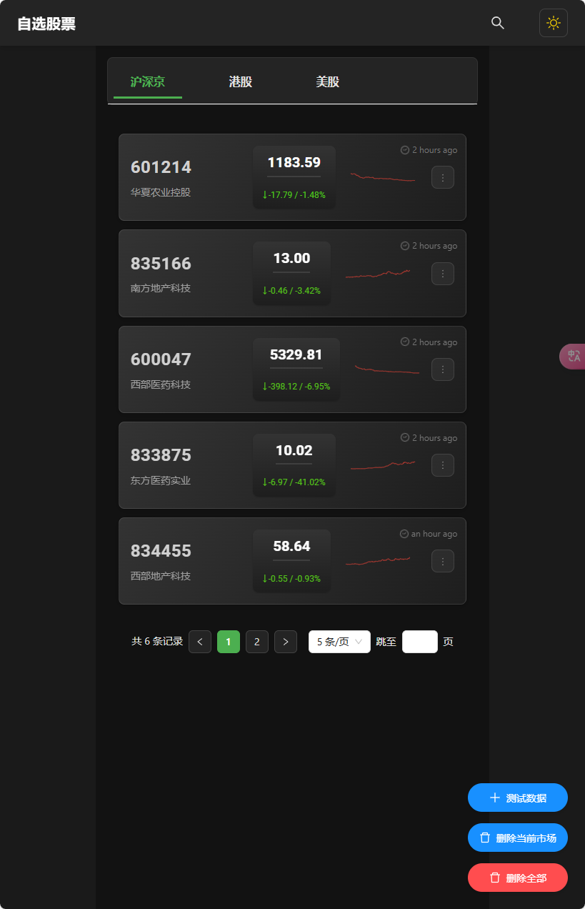

Trae 股票自选系统
项目概述
本项目是一个基于 React + Golang 的股票自选系统，支持股票的增删改查操作，并提供基础行情数据展示功能。系统采用前后端分离架构，具有良好的可扩展性和维护性。
项目特点
- 前后端分离：React + TypeScript 前端，Golang + Gin 后端
- 数据库支持：使用 PostgreSQL 17 作为数据存储
- 跨域支持：完整的 CORS 配置，支持开发和生产环境
- 容器化部署：完整的 Docker 部署方案
- 日志记录：前后端完整的请求日志记录
Prompt
项目是从零开始创建，下面是项目的 Prompt：
基于项目原型图，开发功能：自选股，需要支持合约的新增、删除、修改、查询。自选股界面需要展示基础的行情数据。支持多个不同的市场切换。
前端：react
后端：golang gin gorm
数据库：PostgreSQL
服务端需要支持跨域请求，同时需要考虑数据的校验和错误处理，如果后端服务不可用，前端需要告警提示。
后端需要展示请求和应答的日志；前端也打印通讯的日志，方便排查问题。
UI 和交互优化
前端界面的设计完全依赖的 Grok，我们首先在 Trae 里面做出来产物的雏形，但是没有审美，由于使用的模型，代码能力很强，但是其他能力比较弱，所以我们需要使用 Grok 来优化前端的 UI。
通过将当前的界面截图，上传到 Grok 里面，然后让它帮我们优化 UI，可能一次性拿到很多的优化建议，我们人工评估，然后拷贝到 Trae 中执行，观察优化的效果。
最初的版本，很有工程师的味道，功能都在，但是交互逻辑比较简单直观。

优化后，我们更加贴近了用户的使用场景，实际部署，你会发现，交互上也多了很多细节，动画效果更加完善。


技术栈
- 前端：React + TypeScript
- 后端：Golang + Gin + GORM
- 数据库：PostgreSQL 17
- 部署：Docker + Nginx
📚 文档索引
- 📖 开发指南 - 本地开发环境搭建和开发流程
- 🚀 部署指南 - 生产环境部署和配置
- API 文档（文件未留存） - 接口说明文档
- 数据库设计（文件未留存） - 数据库表结构设计
- 错误码说明（文件未留存） - 错误码及解决方案
已知问题
- 由于使用国外的 AI 模型，Vue3 + Element-Plus 的训练数据不足，因此选择了 React 作为前端框架
- 可能存在偶发的语法错误，需要人工修复
- 部分复杂问题的解决方案需要人工指引
- 代码结构优化需要人工指导
<!-- archive:start -->
当前归档信息（自动生成）
- 实验 ID：
stock-watching--unknown-unknown-r01 - 模型：未记录 / 多轮混合；推理档位：unknown
- 类型：fullstack；预览：none；网络：required
- 完整原始输入快照 · 主题与其他版本
- 输入记录：已保留历史文档；后续多轮输入、上下文和参考资料未完整留存。
- 工具：Trae / Grok。历史记录未提供可确认的单一模型标识，未沿用旧首页推测标签。
- 运行方式：无静态预览，参见上方历史说明与源码。
部署适配记录
无新增实现改动。 <!-- archive:end -->